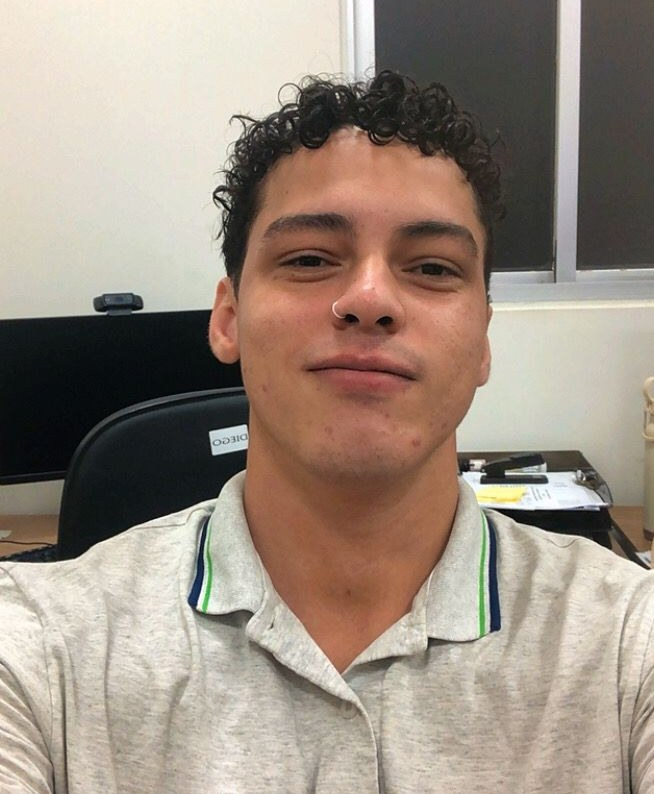

Pós-graduação lato sensu em inteligência artificial
Concluído
Faculdade Alcance, 2026, 640h

Glaymar França
Desenvolvedor web full-stack. Especialista em inteligência artificial.
Procura.AÍ
Bolsa na FAPESQ / LAVID-UFPB
Remoto, desde out 2024
YGO / HUB
Produto da AlttabCorp
Cajazeiras, no ar
Desde mai 2023
Aberto a trabalho remoto, CLT ou PJ.
- Next.js
- TypeScript
- React
- Node.js
- PostgreSQL
- Docker
Em produção
YGO / HUB
12 pessoas usam a plataforma, e a comunidade se encontra todo sábado.
- Presença
- Decks
- Mercado de cartas
- Ranking
- Campeonatos
- Painel admin
Entrada por e-mail, Google e Discord. O app pode ser instalado.
Abrir o YGO / HUBProcura.AÍ
Aplicação do Governo da Paraíba para autocadastro e recuperação de celulares.
- Autocadastro
- Recuperação
- API REST
- Dashboard
- Desktop
- Mobile
Este sistema não tem endereço público.
Inventários históricos
TCC de ADS, publicado no repositório do IFPB.
- Pesquisa
- API REST
- Grafos no Neo4j
- Repositório do IFPB
Trajetória
Out 2024 – presente Desenvolvedor full-stack, bolsista BLD-ADT/H FAPESQ / LAVID-UFPB, projeto Procura.AÍ. Remoto. João Pessoa, PB
Desenvolvo a aplicação web do Procura.AÍ.
Mai 2023 – presente Fundador e desenvolvedor full-stack AlttabCorp. Cajazeiras, PB
Criei e opero o YGO / HUB, principal produto da empresa, em produção para a comunidade de Yu-Gi-Oh! de Cajazeiras. Também publiquei o site institucional da AlttabCorp.
Jan 2025 – presente Técnico de suporte ao usuário (N1/N2) Life Tecnologia, Hospital Universitário Júlio Bandeira (HUJB/Ebserh). Presencial. Cajazeiras, PB
Service Desk no hospital universitário, em paralelo à bolsa de desenvolvimento.
Fev 2022 – set 2022 Desenvolvedor full-stack, prestação de serviços LOOP3. Remoto. Itapema, SC
Desenvolvi funcionalidades de sistema web com Node.js, Express e MongoDB, e interfaces em React e React Native. Integrei pagamentos pela API do Asaas com webhooks e mantive versionamento e CI/CD no Azure DevOps. Corrigi falhas durante o desenvolvimento e no período de garantia contratual.
Set 2021 – fev 2023 Técnico em informática Faculdade Santa Maria. Cajazeiras, PB
Desenvolvi o sistema de atendimento aos alunos com Node.js, TypeScript, React, PostgreSQL e Docker. Implementei a plataforma de Plano Individual de Trabalho (PIT) dos docentes com Node.js, React e SQLite.
Dez 2018 – dez 2021 Desenvolvedor Loopis Jr, empresa júnior do IFPB. Cajazeiras, PB
Desenvolvi sites e sistemas web para clientes com Python/Django e Node.js e participei da estruturação da empresa júnior.
Formação
Especialização em arquitetura de software
Em andamento
FAAL Educacional, 720h
Especialização em segurança da informação
Em andamento
FAAL Educacional, 700h
Tecnólogo em análise e desenvolvimento de sistemas
Concluído
IFPB, campus Cajazeiras, 2018–2023
TCC: sistema de inventários históricos com Neo4j
Técnico em informática integrado ao ensino médio
Concluído
IFPB, campus Cajazeiras, 2014–2018
Cursos
- NLW Unite
- Docker
- Ada Tech
- PYSTACK
- Git
- Neo4j Fundamentals